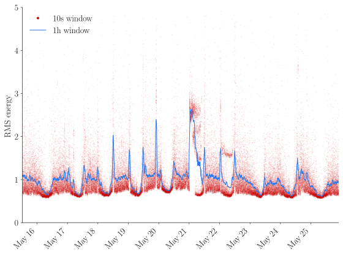
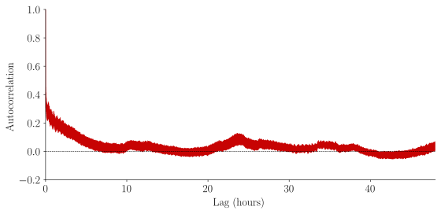
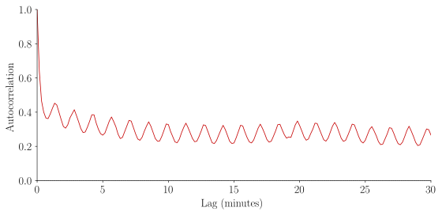

June 23, 2026
I bought a Raspberry Pi, a tiny computer that people have used for fun little robotic projects, house automation, game emulators or weather stations. This isn't my first experience with this kind of device: in 2024 I used a toolkit from AMD as part of a robot that moves particles with fluids.
As a computational scientist, I usually see computers as tools for simulation and data analysis. What attracted me here was a different use: turning a computer into an instrument that continuously observes the physical world. I also bought a USB microphone for a few dollars, and wrote a short program to record the noise intensity in my bedroom for about two weeks. Let's see if we find anything interesting.

The root-mean-square sound intensity over 10s and 1h intervals against time, in arbitrary units.
The signal is very noisy, partly because of the low-quality microphone, but mostly because the street under my window is a noisy place. Nevertheless, a simple moving average reveals some expected patterns. There are clear peaks in the morning and evenings, corresponding to rush hours, when the traffic is the heaviest. It is also easy to distinguish the nighttime, when it is a lot quieter. The large peak in the night of May 21st corresponds to my AC unit fighting the particular high heat of that day.
We can observe this daily repetition when we look at the autocorrelation of the signal:

There is again a clear peak around 24 hours, although the correlation is relatively weak. (By the way, computing an autocorrelation is very similar to a convolution, which can be done efficiently using FFTs.) The autocorrelation still looks noisy. Let's zoom in:

Surprisingly, among all the apparent noise, we see very clear oscillations. Their period is around 85 seconds. This was actually the time scale I was hoping to find: the traffic light cycle around the block. I measured it on my walk home and the agreement is surprisingly good.
This was the first experiment with my Raspberry Pi. I had no specific questions other than: how noisy is my street when I am not paying attention? Despite the relatively cheap microphone, I found surprisingly rich dynamics at multiple time scales. Right now my Raspberry Pi isn't listening anymore, but I might make it watch soon...
The figures were produced with the following scripts:
#!/usr/bin/env python
import argparse
import matplotlib.pyplot as plt
import matplotlib.dates as mdates
from matplotlib.lines import Line2D
import numpy as np
import pandas as pd
def main():
parser = argparse.ArgumentParser()
parser.add_argument('audio_csv', type=str, help='rms data')
parser.add_argument('--save', type=str, default=None)
args = parser.parse_args()
tz = "America/New_York"
df = pd.read_csv(args.audio_csv)
rms_scale = df["rms_mean"].mean()
df["rms_mean"] /= rms_scale
df["rms_max"] /= rms_scale
df["peak_max"] /= rms_scale
df["time"] = pd.to_datetime(df["interval_start_utc"], utc=True, format='ISO8601').dt.tz_convert(tz)
df = df.sort_values("time")
df = df.set_index("time")
df["rms_30m"] = df["rms_mean"].rolling("30min", center=True).mean()
df["rms_1h"] = df["rms_mean"].rolling("1h", center=True).mean()
fig, ax = plt.subplots()
ax.plot(df.index, df["rms_mean"], '.', ms=0.1, c='C0', label='10s window')
ax.plot(df.index, df["rms_1h"], '-', lw=1, c='C1', label='1h window')
ax.xaxis.set_major_locator(mdates.AutoDateLocator())
ax.xaxis.set_major_formatter(
mdates.DateFormatter("%b %d")
)
plt.setp(
ax.get_xticklabels(),
rotation=45,
ha="right",
)
ax.set_ylabel("RMS energy")
ax.set_ylim(0.0, 5)
legend_elements = [
Line2D(
[0], [0],
marker='.',
linestyle='None',
color='C0',
markersize=6,
label='10s window'
),
Line2D(
[0], [0],
color='C1',
lw=1,
label='1h window'
),
]
ax.legend(handles=legend_elements)
plt.tight_layout()
if args.save:
plt.savefig(args.save)
else:
plt.show()
if __name__ == '__main__':
main()
#!/usr/bin/env python
import argparse
import matplotlib.pyplot as plt
import numpy as np
import pandas as pd
def main():
parser = argparse.ArgumentParser()
parser.add_argument("audio_csv", type=str, help="rms data")
parser.add_argument("--max-lag-hours", type=float, default=24.0)
parser.add_argument("--minutes", action="store_true", help="show x axis in minutes instead of hours")
parser.add_argument("--save", type=str, default=None)
args = parser.parse_args()
df = pd.read_csv(args.audio_csv)
df["time"] = pd.to_datetime(df["interval_start_utc"], utc=True, format="ISO8601")
df = df.sort_values("time").set_index("time")
x = df["rms_mean"] / df["rms_mean"].mean()
dt = "10s"
x = x.resample(dt).mean().interpolate()
dt_seconds = pd.to_timedelta(dt).total_seconds()
max_lag_samples = int(args.max_lag_hours * 3600 / dt_seconds)
y = x.to_numpy()
y -= y.mean()
# FFT-based autocorrelation — O(n log n), avoids O(n^2) loop
n = len(y)
yf = np.fft.rfft(y, n=2 * n)
acf = np.fft.irfft(yf * np.conj(yf))[:n].real
acf /= acf[0]
acf = acf[:max_lag_samples + 1]
lags_hours = np.arange(len(acf)) * dt_seconds / 3600
if args.minutes:
lags = lags_hours * 60
max_lag = args.max_lag_hours * 60
xlabel = "Lag (minutes)"
else:
lags = lags_hours
max_lag = args.max_lag_hours
xlabel = "Lag (hours)"
fig, ax = plt.subplots(figsize=(8, 4))
ax.plot(lags, acf, "-", lw=0.8, c="C0")
ax.axhline(0, color="k", lw=0.5, ls="--")
ax.set_xlabel(xlabel)
ax.set_ylabel("Autocorrelation")
ax.set_xlim(0, max_lag)
plt.tight_layout()
if args.save:
plt.savefig(args.save)
else:
plt.show()
if __name__ == "__main__":
main()